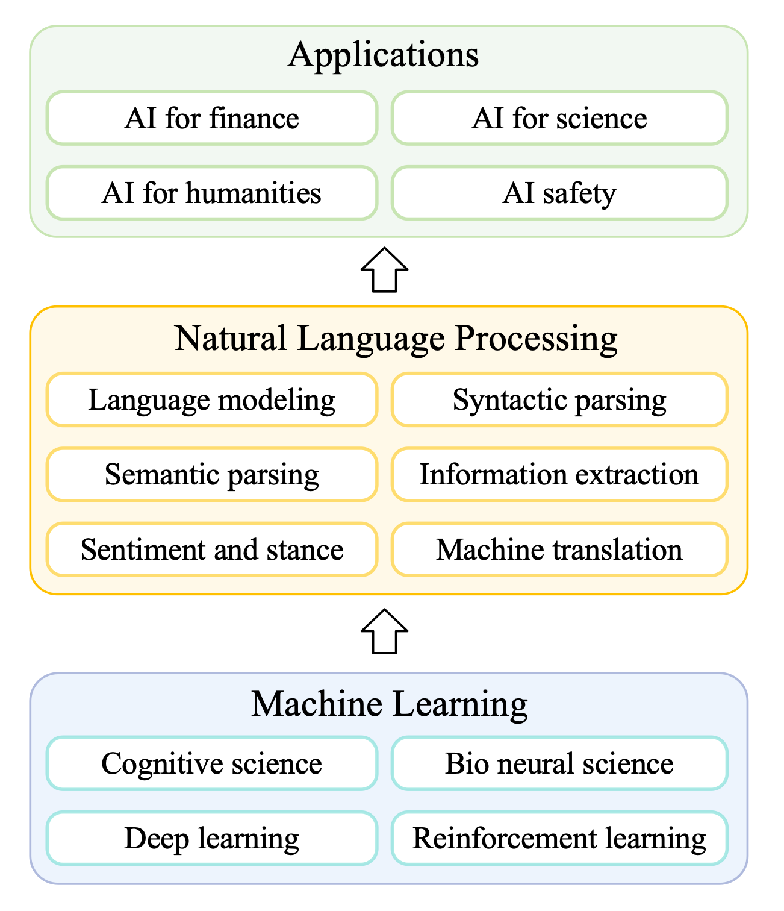
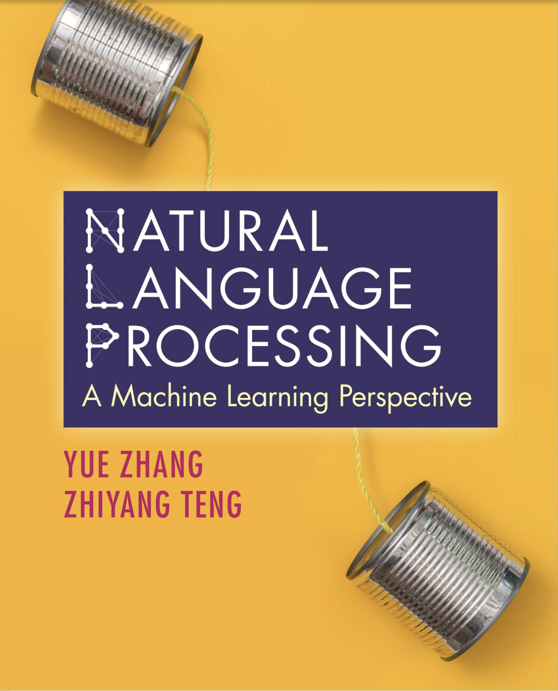

Biography
I am a tenured full professor at Westlake University.
I worked as associate professor at Westlake University from Sep 2018 to Jun 2022,
and assistant professor at Singapore Universit of Technology and Design from Sep 2012 to Aug 2018.
Before joining SUTD, I worked as a postdoctoral research associate at University of Cambridge.
I received my PhD degree from University of Oxford in Dec 2009, working on statistical Chinese processing for my thesis.
I received my MSc degree from University of Oxford in Oct 2006, working on statistical machine translation from Chinese to English by parsing (MSc thesis).
I received my undergraduate degree on Computer Science from Tsinghua University, China.
I have been lucky to have supervised numerous excellent PhD students at SUTD and Westlake University,
many of which half taken academic positions in renowned institute such as
Harvard University,
University of Cambridge,
Harbin Institute of Technology,
Peking University and
Zhejiang University.
We Are Hiring!
Our lab is currently recruiting talented individuals for the following positions:
- PhD Candidates
- Research Assistants
- Postdoctoral Researchers
We also welcome international PhD students to join our team. For more details and to apply, please visit: Click Here
Research Interesets
My research interests include natural language processing, its underlying machine learning algorithms.
Recently, my lab focuses on the difference between neural language models and human cognition, with regard to the difference between statistics and causal reasoning.
We work on analyzing the differences, building technical solutions to reduce the gap, and leveraging the divergence for automatically detecting AI generated text.
This set of slides discusses some of work in this line.
I also work on a range of fundamental NLP tasks, including syntactic parsing, semantic parsing, information extraction and machine translation.
For downstream applications, I am interested in using AI to automate scientific research.
I serve in the editorial board for Transaction of Association of Computational Linguistics (action editor), IEEE Transaction on Big Data (associate editor), ACM Transactions on Asian and Low Resource Language Information Processing (associate editor), IEEE/ACL Transactions on Speech, Audio and Language Processing (associate editor), and Computer, Speech and Language (assocaite editor). I was a PC co-chair of EMNLP (2022) and CCL (2020). I won the best paper awards of IALP (2017), COLING (2018) and best paper honor able mention of SemEval (2020), and was shortlisted for best demonstrations in ACL (2018) and best paper in ACL (2023).

Book
My textbook "Natural Language Processing - A Machine Learning Perspective" is published with cambridge university press. I record online courses using this book.
Online courses
- Zhihu Zhixuetang Online Course on Natural Language Processing (Part 1)
- Zhihu Zhixuetang Online Course on Natural Language Processing (Part 2)
- Bilibili Natural Language Processing Online Course
- Youtube Natural Language Processing Online Course
- Teaching Material
